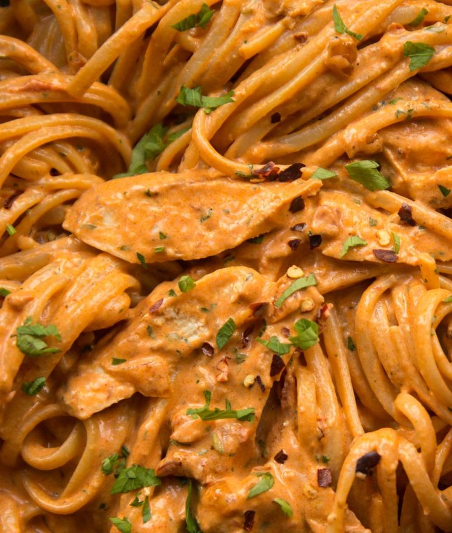

Spicy Pasta

Description
Pasta has always been a favorite for my family. This is an easy meal to make
after work. You can feed just yourself or you can feed an entire family just
depends how much you make. Many people have the ingredients for it already for it.
This recipie goes over the ingredients and all the steps in order for you to
easily fallow. This recipie is fairly quick to make so its easy for anyone to
make anyday. The ingredients come together and make an amazing easy to cook
homemade meal that everyone is sure to enjoy.
Ingredients
Chicken
- 2 tsp Olive Oil
- 1/2 tsp Smoked Paprika
- 1/2 tsp Cayenne Pepper
- 1/4 tsp Salt
- 1/4 tsp Black Pepper
- 1x 9oz/250g Chicken Breast, brought close to room temp
Pasta
- 1 tbsp Butter
- 1 small Onion, finely diced
- 1 tsp finely diced Garlic (approx 1 large clove)
- 1/2 tsp Chilli Flakes
- 6x Sun Dried Tomatoes, finely diced (~2oz/60g)
- 1/4 cup / 60ml Dry White Wine (see notes)
- 7oz / 200g Linguine (or other long cut pasta)
- 2 tbsp Tomato Puree (tomato paste in US)
- 2/3 cup / 160ml Heavy/Double Cream
- 1oz / 30g Parmesan, finely grated
- 1 tbsp finely diced Fresh Parsley
- Salt & Pepper, to taste
Steps
- In a small bowl or ramekin, combine 2 tsp olive oil, 1/2 tsp smoked paprika & cayenne pepper and 1/4 tsp salt & black pepper.
- Butterfly the chicken breast right the way through to make 2 even-sized breasts. Coat in the spicy marinade.
- Add the chicken to a large pan over medium-high heat and fry for a few minutes on each side, or until lightly charred and just cooked through the centre (depending on thickness it may take slightly more or less time). Place to one side and when needed, slice into thin strips, ensuring you slice against the natural grain of the chicken and at a slight angle.
- Turn the heat down to medium and melt in 1 tbsp butter, scraping off any flavour in the pan with your wooden spoon. Add the onion and fry until it begins to soften and pick up colour. Add 1 tsp garlic, 1/2 tsp chilli flakes and the sun-dried tomatoes and fry for a minute or so, then pour in 1/4cup/60ml dry white wine. Allow the wine to completely reduce (important to burn off the alcohol, should take 3-4 minutes or so).
- Meanwhile, add 7oz/200g pasta to salted boiling water and cook until al dente.
- Add 2 tbsp tomato puree to the pan. Fry for a couple of minutes (important to sweeten the taste) then deglaze the pan with 1/3cup/80ml chicken stock. Pour in 2/3cup/160ml heavy/double cream and season to taste with salt & pepper. Bring to a gentle simmer then lower the heat.
- Use tongs to transfer the cooked pasta straight from the pot into the pan and toss to combine. Add 1oz/30g freshly grated parmesan, 1 tbsp fresh parsley and the chicken strips (alongside any resting juices). Continue tossing, adding leftover starchy pasta water from the pot to thin out the sauce as needed.
Back to Homepage